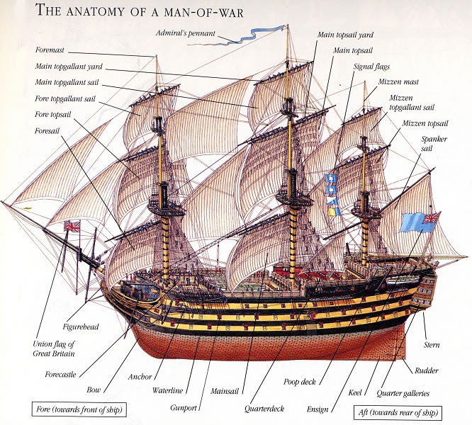

나폴레옹 시대 영국 전함의 전투 광경 - Lieutenant Hornblower 중에서 (17)
게시: 2019-06-03T06:30:12+09:00
화이팅이 그의 앞에 나타났는데 그의 주홍색 코트가 더럽혀지고 손목에는 검을 대롱대롱 매단 채였다. 그의 눈빛은 충혈되고 흐릿했다. "저들을 뒤로 물리게." 부시는 전투의 광기 속에서 필사적으로 자신의 이성을 유지하려 애쓰며 말했다. 화이팅은 부시를 알아보고 이 명령을 이해하는데 1~2초 걸리는 모양이었다. "예, 부관님." 그가 말했다. 빌딩 너머를 보니 또 다른 수병들 한무리가 우르르 쏟아져 들어오고 있었다. 혼블로워의 공격조가 반대쪽 성벽에서 출입구를 찾은 모양이었다. 부시는 주변을 돌아보고는 마침 근처에 나타난 그의 부하들 한무리를 불렀다. "나를 따라와." 그는 말하고는 앞으로 나아갔다. 완만한 경사로를 따라 올라가니 성곽으로 올라갈 수 있었다. 올라가는 중간 지점에는 사람 하나가 죽어넘어져 있었지만 부시는 힐끗 쳐다보기만 했을 뿐 관심을 주지 않았다. 성곽 위쪽에는 포안을 통해 밖을 겨누고 있는 6문의 거포로 이루어진 주 포대가 있었다. 그 너머는 하늘이었는데, 온통 피처럼 붉은 색의 새벽놀로 물들어 있었다. 하늘의 최고점을 향해 지상에서 약 1/3 정도 지점까지는 색상이 굉장했는데, 부시가 그걸 보느라 잠깐 멈춘 사이에 수평선 위에 낀 구름 사이로 태양의 황금빛 광채가 비쳤고, 붉은 놀은 눈에 띄게 희미해졌다. 푸른 하늘과 흰 구름과 황금빛으로 찬란히 빛나는 태양이 그 자리를 대신했다. 그게 공격에 걸린 시간을 재는 척도였다. 가장 이른 시간의 새벽에서 열대의 일출까지는 불과 몇 분 걸리지 않았다. 부시는 멈춰서서 이 놀라운 사실을 깨달았다. 체감상으로는 이미 늦은 오후가 되었을 시간이라고 생각했던 것이다. 이 포좌로부터는 전체 만의 전경이 훤히 보였다. 저 반대편 해안이 보였고, 리나운 호가 좌초되었던 여울과(그게 고작 어제 일이었던가 ?), 저쪽의 언덕으로 급하게 이어지는 구릉지대가 보였다. 그 지점의 기슭 부분에는 주변 지형과 날카롭게 구분된 또다른 포대의 모습이 보였다. 왼쪽으로는 반도의 높이가 툭 낮아져 일련의 바위투성이 돌출부가 푸른 바다 속으로 펼친 손가락처럼 뻗어 있었다. 그 위치를 더 지나 돌면 스캇츠맨 만의 사파이어 색깔의 잔잔한 수면이 보였고, 거기에 선미 돛대의 중간 돛(mizen topsail)에 밝은 햇빛을 받고 있는 리나운 호가 있었다. 이 거리에서는 전열함이 마치 예쁜 장난감처럼 보였다. 부시는 그 배를 보고는 잠깐 숨이 멎었다. 그건 그 광경의 아름다움 때문이 아니라 안도감 때문이었다. 전열함이 눈에 보이니 그에 연관된 기억들이 떠오르면서 전투로 흐려졌던 그의 이성이 밀물처럼 되돌아왔다. 이제 해야 할 일이 천가지는 되었던 것이다.

(선수 돛대를 foremast, 중간 돛대를 mainmast, 선미 돛대를 mizen mast 라고 합니다. 각 돛대마다 돛을 위, 중간, 아래 해서 3폭을 달지요. 그러나 topsail이라는 것이 꼭대기 돛이 아니라 중간 돛입니다. 맨 꼭대기의 돛은 topgallant sail, 혹은 줄여서 t'gallant sail이라고 부릅니다. 복잡하더라고요.)
혼블로워가 다른 경사로를 통해 올라왔다. 헝클어진 군복을 입은 그의 모습은 마치 허수아비처럼 보였다. 그도 부시처럼 한 손에는 군도를, 다른 손에는 권총을 쥐고 있었다. 그의 옆에는 웰라드가 그의 덩치에 어울리지 않게 커다란 수병용 군도를 들고 있었는데, 그의 바로 뒤에는 한 20명 정도의 수병들이 아직 군기가 빠지지 않은 모습으로 총검까지 착검한 머스켓 소총을 쥐고 전투 태세로 따르고 있었다. "좋은 아침입니다, 부관님." 혼블로워가 말했다. 비록 찌그러졌지만 군모가 아직 그의 머리에 붙어 있어서 혼블로워는 거기에 손을 대고 경례를 하려 했는데, 다음 순간 손에 아직 칼을 쥔 상태라는 것을 깨닫고 산신히 멈췄다. "좋은 아침일세." 부시는 자동적으로 대꾸했다. "축하드립니다, 부관님." 혼블로워가 말했다. 그의 얼굴은 창백했고 그의 입에 걸린 미소는 마치 시체가 씩 웃는 모습 같았다. 그의 입술과 턱에는 수염이 삐죽삐죽 자라 있었다. "고맙네." 부시가 말했다. 혼블로워는 권총을 그의 벨트에 쑤셔넣고 군도를 칼집에 넣었다. "저쪽 전부는 제가 장악했습니다, 부관님." 그는 뒤쪽으로 손짓을 하며 계속 말했다. "계속 진행할까요 ?" "그래, 그러게, 미스터 혼블로워." "예, 부관님." 이번에는 혼블로워가 모자에 손을 대고 경례를 할 수 있었다. 그는 부사관과 수병들을 포대에 배치하는 명령을 재빨리 내렸다. "보시다시피, 부관님." 혼블로워가 손으로 가리키며 말했다. "몇 놈은 도망쳤습니다." 부시는 만 아래로 이르는 가파른 언덕사면을 내려다보았는데, 몇 명의 사람들이 거기 보였다. "우리를 귀찮게 할 정도는 아니군." 그는 말했다. 이제서야 그의 머리가 제대로 돌아가는 것 같았다. "예, 부관님. 주 성문에 40명의 포로를 잡아 놓고 경비를 붙여 놓았습니다. 화이팅이 나머지를 잡아들이고 있더군요. 허락하시면 이제 가보도록 하겠습니다, 부관님." "그러게, 미스터 혼블로워." 공격의 광기 속에서도 최소한 누군가는 맑은 머리를 유지하고 있었던 것이다. 부시는 저쪽 경사로로 내려갔다. 부사관 하나와 수병 두 명이 경비를 서고 있었다. 그가 나타나자 그들은 차렷 자세를 취했다. "뭘 하고 있나 ?" 그가 물었다. "이거 화약고임다, 부관님." (This yere's the magazine, zur,) 그 부사관, 즉 선수 돛대 망루의 조장인 암브로즈가 대답했다. 그는 벌써 몇 년째 해군에서 복무하면서도 어릴 때 익힌 데본(Devon) 지방의 거친 사투리를 여전히 쓰고 있었다. "저흰 그걸 지키고 있슴다." "미스터 혼블로워의 명령인가 ?" "녜, 부관님." (Iss, zur.) 주 성문 근처에 한무리의 낙담한 포로들이 쭈그리고 앉아있었다. 혼블로워는 이미 그들에 대해 보고했었다. 하지만 그가 보고하지 않은 경비들도 있었다. 우물에 보초 하나가 있었고, 성문에도 경비들이 서있었다. 공격조에서 가장 믿을 만한 부사관인 울튼이 성문 옆 긴 목조 건물에 6명의 수병들을 데리고 경비를 서고 있었다. "자네 임무는 뭔가 ?" 부시가 물었다. "식량 창고를 지키고 있습니다, 부관님. 술도 여기 있습니다." "알겠네." 만약 공격에 참여했던 미친 놈들, 가령 부시에게 총검을 찔러댔던 그 해병 같은 놈들이 술을 손에 넣는다면 정말 통제불능의 상황이 될 것이었다. 부시의 공격조에서 그의 부하로 있는 사관생도인 애벗이 서둘러 뛰어왔다. "자넨 대체 뭘하고 있었던 건가 ?" 부시가 신경질적으로 캐물었다. "공격이 시작된 이후로 전혀 보이질 않더군." "죄송합니다, 부관님." 애벗이 사과했다. 물론 그는 공격의 광기 속에 휩쓸렸겠지만 그건 변명이 될 수 없었다. 방금 어린 웰러드가 혼블로워 옆에 찰싹 달라붙어서 임무를 수행하고 있는 것을 본 뒤에는 특히 그랬다. "전열함에 신호를 보낼 준비를 하게." 부시가 명령했다. "자넨 벌써 5분 전에 준비를 마쳤어야 했어. 대포 3문에서 대포알을 빼내게. 깃발을 가지고 있던게 누구였지 ? 찾아내서 스페인 깃발 위에 올리게. 빨리 서둘러, 빌어먹을." 승리는 달콤할지 몰라도 이제 반응이 가라앉자 부시의 성질머리에는 별 영향을 주지 못했다. 부시는 잠 한숨 못잤고 아침도 먹지 못했다. 비록 요새를 점령한지 고작 10분이 지났을 뿐이었지만 그 10분 동안 멍하니 있었다는 사실이 그의 양심을 찔리게 만들고 있었다. 그 시간 동안 그가 해놓았어야 하는 일들이 많았던 것이다. ---------------------------------- 일단 여기까지 해서 Lieutenant Hornblower 중에서 제가 번역하려고 했던 부분이 다 끝났습니다. 처음엔 뭔가 다른 일로 싱숭생숭하여 도저히 나폴레옹 연재를 할 심적 상태가 아니라서 일단 이걸로 때우자 라고 시작했는데, 번역하면서 저도 잘 이해 못했던 부분, 가령 nipper라든가 messenger라든가 하는 해양 용어를 알게 된 건 저로서도 즐거웠습니다. 여기까지 읽으셨으면 다 이해들 하시겠지만, 이 소설은 단순히 해군에서의 모험담과 전투 장면 등에 치중하지 않습니다. 혼블로워의 군대 생활을 보면 여러분들이 조직 생활, 더 나아가 사회 생활에서 어떻게 행동하셔야 하는지를 잘 보여줍니다. 정말 대조되는 것이 임시 함장 버클랜드의 우유부단함과 부시의 단순무식함, 그리고 혼블로워의 주도면밀함입니다. 제가 좋아하는 다른 나폴레옹 전쟁 소설인 Sharpe 시리즈에서 명쾌하게 정의를 내리고 있습니다만, 지휘관이란 '어려운 상황에서 결정을 내리고 그 결정에 대한 책임을 지는 사람'입니다. 버클랜드는 여러가지 면에서 고구마인데, 특히 지휘관이라는 사람이 결정을 못 내리고 우물쭈물하는 것은 정말 최악이라고 할 수 있습니다. 그에 비해 혼블로워는 평상시에 주의깊게 주변 상황을 관찰하며 끊임없이 계산을 하다가, 필요한 순간에 신속하게 결정을 내리는 사람입니다. 모든 경우에 대해 회사에서든 영업장에서든 혼블로워처럼 생각하고 행동한다면 정말 승승장구할 것 같네요. 그러나 언제나 그렇지만 조직 생활이라는 것이 사람의 유능함에만 달려 있는 것은 아닙니다. 운도 따라야 하고, 인맥도 있어야 하지요. 빽이라고는 아무 것도 없던 혼블로워도 그 때문에 쓴 맛을 보게 됩니다. 그 이야기는 이 소설을 끝까지 읽으시면, 정말 흥미진진하게 즐기실 수 있을 것입니다. 다음주부터는 다시 나폴레옹 연재를 시작해야 하는데, 솔직히 그동안 읽은 것이 없어서 제대로 연재가 될지는 장담 못드리겟습니다. 일단은 오랜만에 먹을것과 마실것 이야기 한편 쓰려고 합니다. 언제나 그렇지만 부족한 글 읽어주셔서 고맙고, 또 여전히 모자란 글이 되겠지만 그래도 앞으로도 읽어주시면 정말 고맙겠습니다.